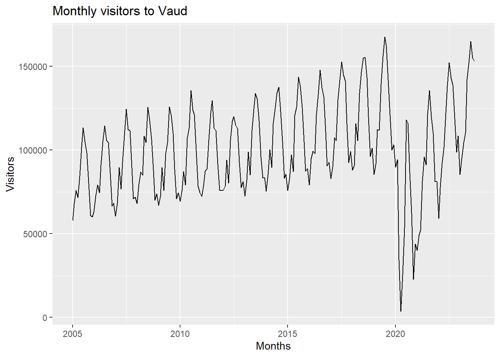
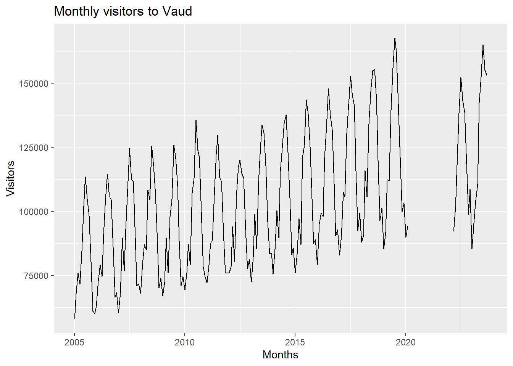
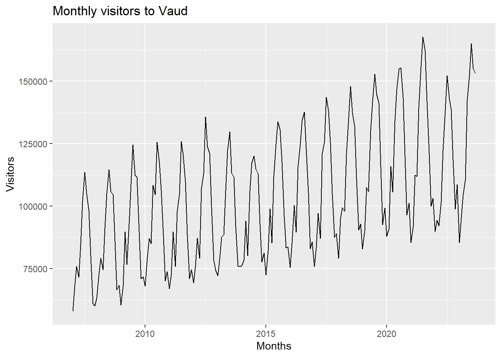

[1] "C:/Users/victo/Documents/GitHub/Forecasting_G9/Project 1/scripts/setup.R"1.Introduction
Tourism is a significant sector for Switzerland’s economy, contributing greatly to its GDP and employment. Accurate forecasting of tourist arrivals is essential for effective planning and decision-making in the tourism industry. This project aims to predict the total number of visitors to Vaud from October 2023 to December 2024 as well as the number of visitors from the Philippines to Ticino during the same period. Utilizing historical data from 2005 to September 2023, we apply various forecasting techniques, integrating exogenous variables such as GDP and weather conditions to enhance the accuracy of our predictions.
Objective
The primary objectives of this project are:
To forecast the total number of visitors to the canton of Vaud from October 2023 to December 2024.
To forecast the number of visitors from the Philippines to the canton of Ticino for the same period.
We aim to compare different time series models and include exogenous variables to improve forecast accuracy.
Data cleaning/wrangling
The dataset comprises monthly data on hotel sector arrivals, categorized by canton and visitors’ country of residence. The following steps were taken to clean and prepare the data for analysis:
Translation: The ‘Monat’ column, originally in German, was translated to English to facilitate better understanding.
Date Formatting: A new ‘date’ column was created by combining the ‘Jahr’ and ‘Monat’ columns.
Missing Values: We identified and addressed missing values, specifically focusing on the ‘value’ column which had 51,395 missing entries.
Outlier Detection: The data was visually inspected for outliers, particularly the significant drop during the COVID-19 pandemic.
Dummy Variables: A dummy variable for the COVID period was created to handle the unique impact of the pandemic on tourism.
Merging Exogenous Data: Weather data (temperature and precipitation) for Payerne and Lugano, and GDP data for Vaud and Ticino were merged with the main dataset to include additional predictive variables.
Exploratory Data Analysis (EDA)
# Load packages
library(tidyverse)── Attaching core tidyverse packages ──────────────────────── tidyverse 2.0.0 ──
✔ dplyr 1.1.3 ✔ readr 2.1.4
✔ forcats 1.0.0 ✔ stringr 1.5.0
✔ ggplot2 3.4.4 ✔ tibble 3.2.1
✔ lubridate 1.9.3 ✔ tidyr 1.3.0
✔ purrr 1.0.2
── Conflicts ────────────────────────────────────────── tidyverse_conflicts() ──
✖ dplyr::filter() masks stats::filter()
✖ dplyr::lag() masks stats::lag()
ℹ Use the conflicted package (<http://conflicted.r-lib.org/>) to force all conflicts to become errorslibrary(lubridate)
library(fpp3)Warning: le package 'fpp3' a été compilé avec la version R 4.3.2── Attaching packages ────────────────────────────────────────────── fpp3 0.5 ──
✔ tsibble 1.1.4 ✔ fable 0.3.3
✔ tsibbledata 0.4.1 ✔ fabletools 0.4.0
✔ feasts 0.3.1 Warning: le package 'tsibble' a été compilé avec la version R 4.3.2Warning: le package 'tsibbledata' a été compilé avec la version R 4.3.2Warning: le package 'feasts' a été compilé avec la version R 4.3.2Warning: le package 'fabletools' a été compilé avec la version R 4.3.2Warning: le package 'fable' a été compilé avec la version R 4.3.2── Conflicts ───────────────────────────────────────────────── fpp3_conflicts ──
✖ lubridate::date() masks base::date()
✖ dplyr::filter() masks stats::filter()
✖ tsibble::intersect() masks base::intersect()
✖ tsibble::interval() masks lubridate::interval()
✖ dplyr::lag() masks stats::lag()
✖ tsibble::setdiff() masks base::setdiff()
✖ tsibble::union() masks base::union()library(stats)
library(dplyr)
library(ggplot2)
library(fable)
library(tsibble)
library(fabletools)
library(patchwork)Warning: le package 'patchwork' a été compilé avec la version R 4.3.2# Load data
df <- read.csv("Dataset_tourism.csv", stringsAsFactors = FALSE)
# Translate Monat column to English
german_months <- c("Januar", "Februar", "M\xe4rz", "April", "Mai", "Juni",
"Juli", "August", "September", "Oktober", "November", "Dezember")
english_months <- month.name
# Replace German month names with English month names
df$Monat <- factor(df$Monat, levels = german_months, labels = english_months)
# Check if any month translations have failed leading to NAs
if(any(is.na(df$Monat))) {
warning("NA values found in month translation. Check 'Monat' levels and labels.")
}
df$date <- ymd(paste(df$Jahr, df$Monat, "01", sep = "-"))
if(any(is.na(df$date))) {
warning("NA values found in 'date' creation. Check 'Jahr', 'Monat' concatenation.")
}
# Count NAs
sum(is.na(df$Jahr)) # 0 NAs[1] 0sum(is.na(df$Monat)) # 0 NAs[1] 0sum(is.na(df$date)) # 0 NAs[1] 0sum(is.na(df$value)) # 51395 NAs[1] 51395sum(is.na(df$Kanton)) # 0 NAs[1] 0sum(is.na(df$Herkunftsland)) # 0 NAs[1] 01. Predict total visitors between Oct 2023 and Dec 2024
- Time Series Plots: Visualized the monthly visitors to Vaud and Filipino visitors to Ticino, highlighting trends, seasonality, and the impact of COVID-19.
### 1. Predict total visitors between Oct 2023 and Dec 2024
# Subset dataframe to remove nationalities and cantons, and keep totals.
df <- df[df$Herkunftsland == "Herkunftsland - Total" & df$Kanton == "Vaud", ]
# Transform df to tsibble
df <- tsibble(df, index = date)
# Plot visitors
df |> autoplot(value) +
ggtitle("Monthly visitors to Vaud") +
ylab("Visitors") +
xlab("Months")
# We see a upwards trend with seasonality, and a little bit of noise. We also see a strong dip in the amount of visitors during COVID, which will bias our model.
# We will add a dummy variable for all observations during covid, so we may remove them when creating a model in order to not bias our model.
# We consider COVID to be a black swan, and a unique event, and we will assume that it will not happen again during the period that we are predicting (Oct 23 - Dec 24).
# Lockdown started in March 2020, and all measures except masks were lifted indefinitely in February 2022.The time series plot of monthly visitors to Vaud from 2005 to 2023 reveals several key insights. There is a clear upward trend in visitor numbers, indicating growing tourism. The plot shows strong seasonal patterns, with regular peaks and troughs each year, reflecting typical tourist activity periods. A significant drop in visitors during the COVID-19 pandemic (2020-2022) is evident, illustrating the impact of global travel restrictions. Post-pandemic, visitor numbers recover, though with some variability. This highlights the need to account for trends, seasonality, and anomalies in our forecasting models.
# Add dummy variable covid, set to 1 between March 2020 and Feb 2022, 0 everywhere else.
df$covid <- ifelse(df$date >= ymd("2020-03-01") & df$date <= ymd("2022-02-01"), 1, 0)
# Create no covid tsibble
df_nocovid <- df
df_nocovid$value[df_nocovid$covid == 1] <- NA
df_nocovid |> autoplot(value) +
ggtitle("Monthly visitors to Vaud") +
ylab("Visitors") +
xlab("Months")
This code adds a COVID indicator variable (set to 1 between March 2020 and February 2022, 0 otherwise) and replaces visitor values with NA for this period in a copy of the dataframe. Then, it generates a plot of monthly visitors to Vaud, excluding the COVID period data.
# Since the COVID period is exactly 2 years, we can try to "stick" the before and after values together, so we have a time series without gaps, and this won't affect seasonality.
# Drop covid rows
df_nocovid <- df_nocovid[df_nocovid$covid != 1, ]
# Add 2 years from data before covid
df_nocovid$date[df_nocovid$date < ymd("2022-03-01")] <- df_nocovid$date[df_nocovid$date < ymd("2022-03-01")] + years(2)
df_nocovid <- tsibble(df_nocovid, index = date)
df_nocovid |> autoplot(value) +
ggtitle("Monthly visitors to Vaud") +
ylab("Visitors") +
xlab("Months")
The updated time series plot of monthly visitors to Vaud, with the COVID-19 period removed, shows a more consistent upward trend in visitor numbers from 2005 to 2023. The seasonal patterns remain prominent, with regular peaks and troughs each year reflecting typical tourist activity. By excluding the COVID-19 anomaly, the plot provides a clearer view of the underlying trends and seasonality, allowing for more accurate forecasting and analysis of long-term tourism patterns in Vaud.